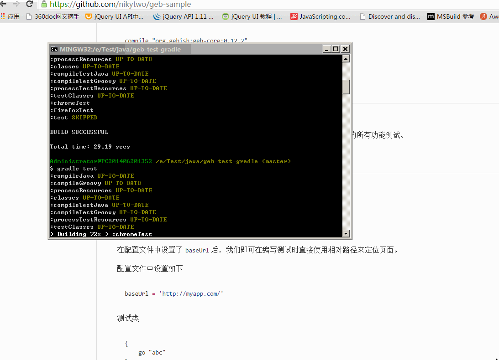

Geb 简易文档
效果图

依赖及安装
- jdk1.7+
- gradle/maven (2选1)
- groovy2.3+
jdk1.7 安装(略)
gradle 安装
1 下载
2 解压
3 设置环境变量：添加GRADLE_HOME环境变量指向解压包路径，将GRADLE_HOME/bin添加到path中。
4 测试安装是否成功：打开命令行，输入gradle -v
maven 安装(略)
groovy 安装
可以通过gradle的包管理功能自动进行安装，无需另外安装。如下代码：
compile "org.gebish:geb-core:0.12.2"
compile "org.seleniumhq.selenium:selenium-firefox-driver:2.45.0"
compile "org.seleniumhq.selenium:selenium-support:2.45.0"
运行测试
安装完依赖后，下载本示例项目。
在项目根目录中打开命令行窗口，然后输入gradle test，将运行项目下的所有功能测试。
使用
配置
Geb默认的配置文件名为GebConfig.groovy。
- baseUrl
在配置文件中设置了baseUrl后，我们即可在编写测试时直接使用相对路径来定位页面。
配置文件中设置如下
baseUrl = 'http://myapp.com/'测试类
{
go "abc"
}
则网址为：http://myapp.com/abc
- 浏览器支持
WebDriver默认支持FireFox，若要使用其他浏览器进行测试，需要下载相关的driver。
如chrome浏览器需要下载chromedriver(本项目已包含，不需要另外下载)。
更多内容请查看官方文档。
API 语法参考
常用
go: 导航至指定页面to: 导航至Page类定义的页面waitFor: 等待页面响应
// 等待页面标题等于某个值
waitFor { title == "Page Title" }
// 語法
waitFor {} // 預設的等待時間
waitFor(10) {} // 最長等待時間為 10 秒
waitFor(10, 0.5) {} // 最長等待時間為 10 秒，每次判斷條件的間隔時間為 0.5 秒
waitFor("quick") {} // 依照自定的等待時間使用waitFor时，不要使用引用对象，若使用，则每次检查的都是同一个对象
Navigator API
在编写浏览器自动化测试时，需要大量的DOM操作，
幸好Geb提供了类似jQuery的选择器，让我们可以轻松的找到一个DOM。
- $() 方法
用法与jQuery类似
语法结构：
$([css选择器], [index 或 range], [DOM 元素 attribute 或 text matchers])如:
$("div p", 0)
$("div p", title: "something")
$(0)
$(title: "something")
$("p", 0..1)*.text()
$("p", text: "p1").size()
$("p", text: "p1", class: "a").size()
// 正则表达式
$("p", text: ~/p./)
$("p", text: startsWith("p"))
$("p", text: endsWith("2"))
$("p", text: contains(~/\d/)).Geb提供以下正则表达式方法
| 方法名 | 描述 |
|---|---|
| startsWith | |
| contains | |
| endsWith | |
| containsWord | |
| notStartsWith | |
| notContains | |
| notEndsWith | |
| notContainsWord |
- 查找与过滤方法
// 这两个是一样的
$("div").find(".b")
$("div").$(".b")
// 获取 class=b 的 div
$("div").filter(".b")
// 获取不包含 p 且 class=b 的 DOM
$(".b").not("p")
$("div").hasNot("p")
$("div").hasNot("input", type: "text")
// 获取包含 p 的 div
$("div").has("p")
$("div").has("input", type: "text")- 遍历方法
$("p.d").previous()
$("p.e").prevAll()
$("p.d").next()
$("p.c").nextAll()
$("p.d").parent()
$("p.c").siblings()
$("div.a").children()- 模拟点击
$("a.login").click()- 大小与定位
$("div").height == 20
$("div").width == 40
$("div").x == 20
$("div").y == 10- Accessing tag name, attributes, text and classes
<p title="a" class="a para">a</p>
<p title="b" class="b para">b</p>
<p title="c" class="c para">c</p>assert $("p").text() == "a"
assert $("p").tag() == "p"
assert $("p").@title == "a"
assert $("p").classes() == ["a", "para"]- CSS 属性
assert $("div").css("float") == "left"- 模拟键盘输入
// 模拟输入 foo
$("input") << "foo"
assert $("input").value() == "foo"
// 模拟输入 Ctrl+C
$("input") << Keys.chord(Keys.CONTROL, "c")
- 复杂交互
1 直接使用WebDriver API的WebElement
2 使用Actions类
def actions = new Actions(driver)
WebElement someItem = $("li.clicky").firstElement()
def shiftClick = actions.keyDown(Keys.SHIFT).click(someItem).keyUp(Keys.SHIFT).build()
shiftClick.perform()3 使用闭包
interact {
keyDown Keys.SHIFT
click $("li.clicky")
keyUp Keys.SHIFT
}4 列子
拖放
interact {
clickAndHold($('#draggable'))
moveByOffset(150, 200)
release()
}
// 或者
interact {
dragAndDropBy($("#draggable"), 150, 200)
}
// 或者
interact {
dragAndDrop($("#draggable"), $("#droppable"))
}Ctrl+单击
import org.openqa.selenium.Keys
interact {
keyDown(Keys.CONTROL)
click($("ul.multiselect li", text: "Order 1"))
click($("ul.multiselect li", text: "Order 2"))
click($("ul.multiselect li", text: "Order 3"))
keyUp(Keys.CONTROL)
}滚动条
Actions actions = new Actions(driver)
actions.moveToElement(driver.findElement(By.id('tab'))).perform()
// 或者
interact {
clickAndHold($('#tab'))
release()
}
// 或者
interact {
click(theUI)
}
// 或者
interact {
moveToElement(theUI)
}
// 或者使用 js (略)操作 Frame
(略)
操作 javascript, AJAX 和 动态页面
(略)
处理下载
(略)
Scripts and binding
(略)
测试报告
(略)
测试框架集成
(略)
其他
Geb可以通过继承Page类实现页面的重复使用。
通过继承Module类实现局部页面以便于重复使用。
模拟点击Alert()：
driver.switchTo().alert().accept();更多内容请参考官方文档